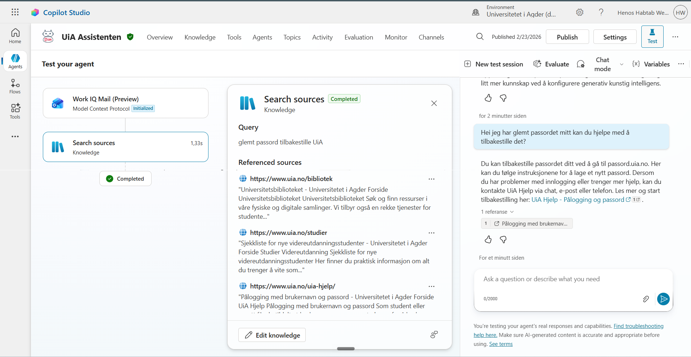
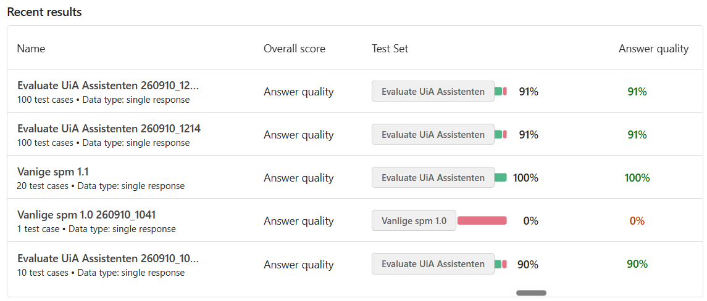
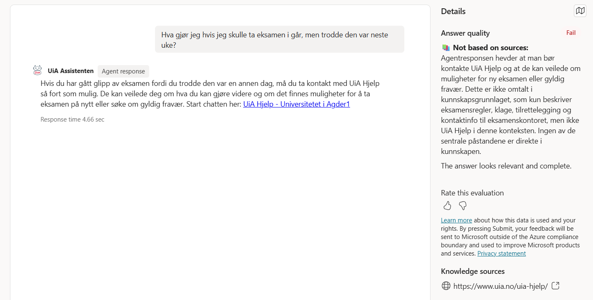

Status 1
Oppsummering av fremdrift, funn og eventuelle justeringer ved første statuspunkt i praksisperioden.
Universitetet i Agder
Universitetet i Agder (UiA) ble grunnlagt i 2007 og har i dag over 13 000 studenter. Universitetet har et særlig fokus på forskning og utdanning innenfor teknologi, helse, samfunnsvitenskap og humaniora.
UiA er det eneste universitetet i Norge som tilbyr en tjeneste kalt UiA Hjelp, en ordning som jevnlig får mye skryt for kvaliteten den holder. Til tross for at UiA Hjelp ser ut til å bare ha fire ansatte, har vi et kontor og tre hele etasjer som er dedikert til at tjenesten skal være operativ.
UiA Hjelp er førstelinjen for studenter og ansatte som trenger teknisk eller mindre teknisk hjelp, enten det gjelder ServiceNow, IT-basistjenester, sikkerhet, tilganger eller andre tjenester. Nesten enhver henvendelse kan rettes hit, og vi kan enten besvare den direkte eller vise videre til riktig instans.
Videreutvikling av en chatbot for UiA Hjelp
Min arbeidsoppgave er å videreutvikle en chatbot-tjeneste som mine kolleger Benjamin og Tobias har begynt på. Jeg jobber først og fremst med å kartlegge hvordan tjenesten kan bli mest mulig produktiv, både for eksterne brukere (studenter, ansatte og gjester) og for internt bruk. Selv jobber jeg med alt fra ServiceNow, IT-basistjenester og sikkerhet til administrasjon og bibliotek.
UiA Hjelp har en stor mengde saksfiler og oppskrifter for å løse ulike tekniske problemer, og en AI-agent kan gjøre det langt mer effektivt å navigere i disse systemene.
Å utvikle boten har vært relativt greit så langt. Jeg bruker Copilot Studio, en no-code-tjeneste fra Microsoft. Vi er nå forbi det mest grunnleggende stadiet og har satt opp de nødvendige begrensningene for chatboten, men jobber videre med å utforske hva den er i stand til å gjøre, samtidig som vi ivaretar sikkerheten og er trygge på at den leverer service av høy standard.
Møt Benjamin
Slik er agenten satt sammen
Inne i Copilot Studio bygges agenten opp av noen få kjerneelementer:
Instruksjoner
Spesifiserer hva agenten skal gjøre, og hvordan den skal opptre.
Kunnskap
All informasjon jeg gir agenten tilgang til, hentet fra UiAs egne nettsider og dokumentasjon.
Verktøy
Verktøy, triggere og agent flows jeg kan koble agenten til, som gir den tilganger og gjør jobben enklere.

Monitor: ytelse og analyse
Copilot Studio har en funksjon som heter Monitor, som viser hvordan agenten presterer over tid. Her kjører jeg egendefinerte testsett og får en løpende analyse av svarkvaliteten.
Tall hentet fra egne evalueringskjøringer i Copilot Studio.

